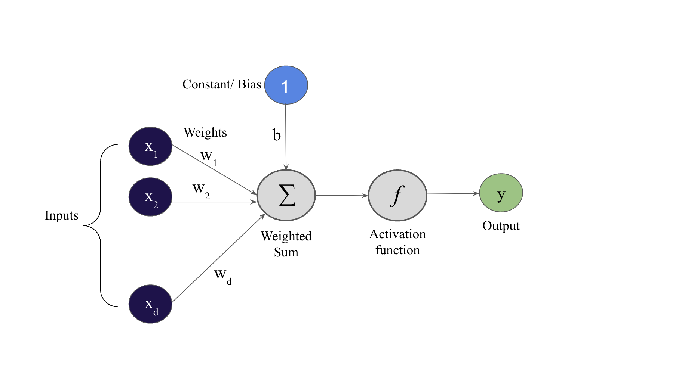

2.2. Perceptron
Contents
2.2. Perceptron#
Perceptron is a linear classifier (binary). It helps to classify the given input data. It is used in supervised learning.
The Neural Networks work the same way as the perceptron. So, if you want to know how neural network works, learn how perceptron works.
Background#
Suppose we are provided with a dataset \(X\) of shape \((m,d)\) where \(m\) and \(d\) are the number of samples (rows) and number of features (column) in \(X\) respectively and a labeled target variable \(y\) (of length same as the number of samples \(m\)).
For example, suppose input \(X\) (having columns \(x_1\) and \(x_2\) and 5 samples i.e \(m=5\) and \(d=2\)) and a target variable \(y\) are as follows:
x1 |
x2 |
y |
|---|---|---|
3 |
5 |
14 |
1 |
4 |
9 |
2 |
6 |
13 |
7 |
3 |
20 |
9 |
1 |
22 |
Here we can see that \(y = 2x_1 + x_2 + 3\). Obviously, in real world we would not get such a nice relationship between \(X\) and \(y\).
Therefore, our aim is to make a “black box” that can predict the value of \(y\) for any given input \(X\) (i.e. if any input \(X\) is given to that black box, it should give out \(y\) as an output without even knowing the true relationship between \(X\) and \(y\)).
This blackbox (in case of Deep Learning) is termed as “Neural Networks” and perceptron model is one such simplistic example of that blackbox.

How does it work?
Consider the image above. Here we have neurons (each circle in the image represents one neuron), inputs, weights, biases, weighted sum, activation function and output.
Neuron#
A neuron is a bloc of mathematical operations linking entities
Inputs#
Now, consider only one sample (or one row) \(x\) from the dataset \(X\) (\(x=[x_1, x_2, ..., x_d]\)). Each of these values are one neuron and thus our Input has \(d\) neurons.
Weights#
Each of these Input neurons have a weight associated to it. Like \(x_1\) has weight \(w_1\), \(x_2\) has weight \(w_2\) and so on. These weights shows the strength of the particular neuron.
Bias#
Then we also have a bias \(b\) (which is also a neuron). A bias value allows you to shift the activation function curve up or down.
A simpler way to understand what the bias is:
It is somehow similar to the constant \(b\) of a linear function \(y = wx + b\). It allows you to move the line up and down to fit the prediction with the data better. Without \(b\), the line always goes through the origin \((0, 0)\) and you may get a poorer fit.
Using a bias, you’re effectively adding another dimension to your input space, which always takes the value one, so you’re avoiding an input vector of all zeros.
The weights and bias are possibly the most important concept of a neural network.
They are the learnable parameters of Neural Networks (that is if we know the values of these weights and biases, then our black box is ready to make the predictions).
weighted sum (\(z\))#
We compute the weighted sum (\(z\)) using the inputs \(x_i\), weights \(w_i\) and bias \(b\) and store it in a neuron.
So,
Activation function output (\(a\))#
Next we pass this weighted sum \(z\) through an activation function \(f\), in order to obtain the output \(a = f(z)\). This is the final output of the perceptron model \(\hat{y} = a\) (or the final prediction).
In short, the activation functions are used to map the input between the required values like \((0, 1)\) or \((-1, 1)\). For a better explanation, check this out: Activation functions (link to previous chapter)
Now that we have digested what a perceptron model is, we are ready to grab a bite of the underlying concepts behind MLP (Multi Layer Perceptron) model, also called as Neural Networks.